Candidate List 20260524 Previous Day Next Day Section 1: New Sources (age<1d) Cosmological Afterglow
Section 2: Old (1-5d) sources observed last night placeholder
Section 1: New Afterglow/FBOT Cands Last Night (3)
1. ZTF26aayixka (Afterglow?) [Back to Top] [Share] [Trigger Swift] [Fritz ] [Lasair ]RA, Dec: 235.74321, -2.11793 15h42m58.37s, -2d-7m-4.56sGalactic (l, b): 4.59208, 39.40733 ext(g-r) = 0.174LegacySurvey: 1 sources in 3 arcsec Closest: d = 0.11 arcsec, 316.4 deg (east of north) photoz=0.83 (68% bounds 0.24, 1.38), type=PSF peak abs mag = -23.92 (68% bounds -20.73, -25.28) Consistent with synchrotron, g-r>0!
2. ZTF26aayktyi (Afterglow?) [Back to Top] [Share] [Trigger Swift] [Fritz ] [Lasair ]RA, Dec: 255.4076, -17.28556 17h 1m37.82s, -17d-17m-8.03sGalactic (l, b): 4.16599, 14.84878 ext(g-r) = 0.443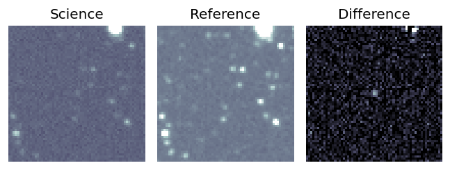
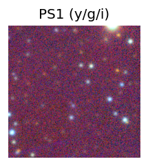
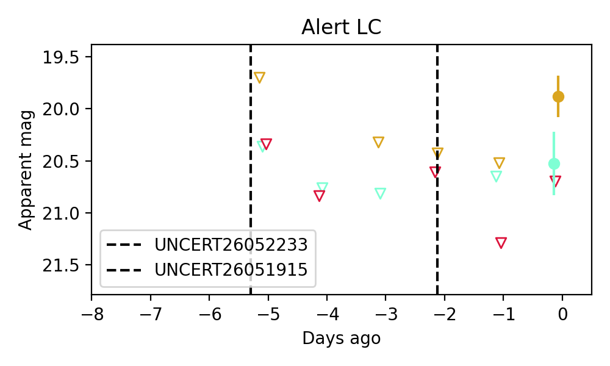
Consistent with synchrotron, g-r>0!
3. ZTF26aaykurd (Afterglow?) [Back to Top] [Share] [Trigger Swift] [Fritz ] [Lasair ]RA, Dec: 254.29726, -20.18882 16h57m11.34s, -20d-11m-19.77sGalactic (l, b): 1.09903, 14.00486 WARNING: 2.45 deg from ecliptic plane ext(g-r) = 0.364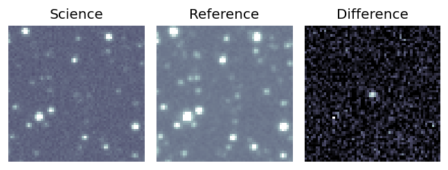
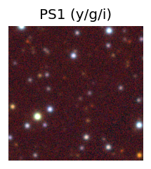
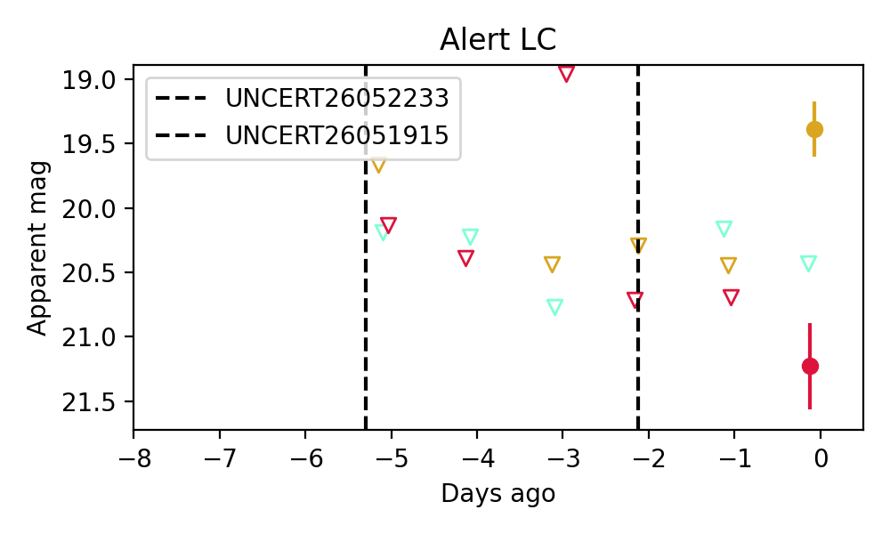
Consistent with synchrotron, g-r>0!
Section 2: Older Sources Observed Last Night (18)
0. ZTF26aaxgdcm (Afterglow?) [Back to Top] [Share] [Trigger Swift] [Fritz ] [Lasair ]RA, Dec: 171.22508, 47.95036 11h24m54.02s, 47d57m1.29sGalactic (l, b): 156.1579, 63.21415 ext(g-r) = 0.017
1. ZTF26aaxgpag (Afterglow?) [Back to Top] [Share] [Trigger Swift] [Fritz ] [Lasair ]RA, Dec: 177.61778, 47.38967 11h50m28.27s, 47d23m22.82sGalactic (l, b): 149.41973, 66.48112 ext(g-r) = 0.026peak abs mag = -18.97 PS1: 1 source in 3 arcsec Closest: d = 0.08 arcsec photoz=0.11+/-0.03 peak abs mag = -19.33 Consistent with synchrotron, g-r>0!
2. ZTF26aaxhekl (Afterglow?) [Back to Top] [Share] [Trigger Swift] [Fritz ] [Lasair ]RA, Dec: 213.38247, 4.7545 14h13m31.79s, 4d45m16.20sGalactic (l, b): 347.73345, 60.27656 ext(g-r) = 0.024LegacySurvey: 1 sources in 3 arcsec Closest: d = 0.23 arcsec, 309.9 deg (east of north) photoz=2.18 (68% bounds 1.23, 2.43), type=PSF peak abs mag = -29.74 (68% bounds -28.21, -30.02) Consistent with synchrotron, g-r>0!
3. ZTF26aaxhvtq (Afterglow?) [Back to Top] [Share] [Trigger Swift] [Fritz ] [Lasair ]RA, Dec: 253.05842, -4.10199 16h52m14.02s, -4d-6m-7.15sGalactic (l, b): 14.42609, 24.1147 ext(g-r) = 0.232
4. ZTF26aaxhwhr (Afterglow?) [Back to Top] [Share] [Trigger Swift] [Fritz ] [Lasair ]RA, Dec: 251.24251, -12.02058 16h44m58.20s, -12d-1m-14.07sGalactic (l, b): 6.21823, 21.1844 ext(g-r) = 0.555
5. ZTF26aaxnixn (Afterglow?) [Back to Top] [Share] [Trigger Swift] [Fritz ] [Lasair ]RA, Dec: 291.49256, -18.63277 19h25m58.21s, -18d-37m-57.97sGalactic (l, b): 19.74597, -15.79987 WARNING: 3.3 deg from ecliptic plane ext(g-r) = 0.098
6. ZTF26aaxpqtd (Afterglow?) [Back to Top] [Share] [Trigger Swift] [Fritz ] [Lasair ]RA, Dec: 195.55616, -14.9683 13h 2m13.48s, -14d-58m-5.89sGalactic (l, b): 306.81348, 47.82213 ext(g-r) = 0.058 Consistent with synchrotron, g-r>0!
7. ZTF26aaycbta (Afterglow?) [Back to Top] [Share] [Trigger Swift] [Fritz ] [Lasair ]RA, Dec: 215.14319, 62.31972 14h20m34.37s, 62d19m10.99sGalactic (l, b): 106.36501, 51.84613 ext(g-r) = 0.019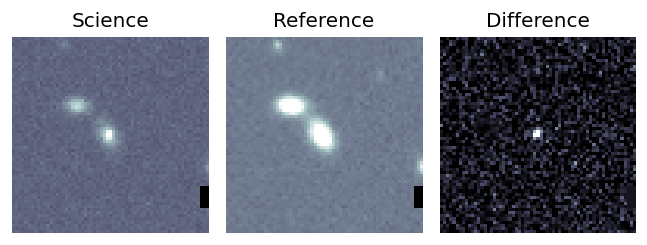
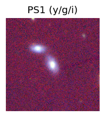
peak abs mag = -17.96 PS1: 1 source in 3 arcsec Closest: d = 0.63 arcsec photoz=0.09+/-0.01 peak abs mag = -18.33 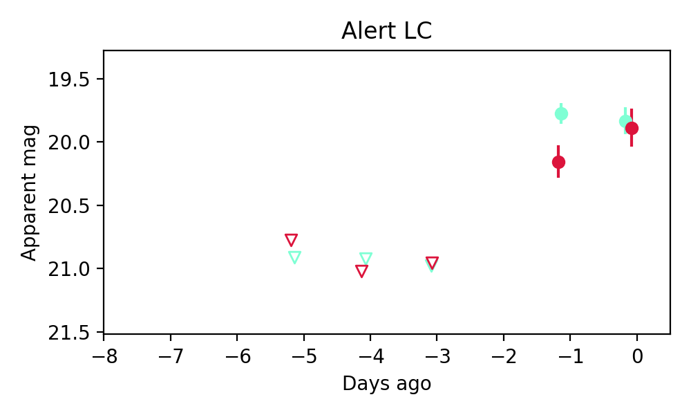
Consistent with synchrotron, g-r>0!
8. ZTF26aaychtj (FBOT?) [Back to Top] [Share] [Trigger Swift] [Fritz ] [Lasair ]RA, Dec: 258.47081, 76.15089 17h13m52.99s, 76d 9m3.19sGalactic (l, b): 108.02704, 32.05239 ext(g-r) = 0.044peak abs mag = -19.57 PS1: 1 source in 3 arcsec Closest: d = 0.13 arcsec photoz=0.25+/-0.12 peak abs mag = -21.04
9. ZTF26aayewuq (FBOT?) [Back to Top] [Share] [Trigger Swift] [Fritz ] [Lasair ]RA, Dec: 242.79668, 49.7888 16h11m11.20s, 49d47m19.67sGalactic (l, b): 77.70336, 45.89271 ext(g-r) = 0.022peak abs mag = -22.27 PS1: 1 source in 3 arcsec Closest: d = 1.09 arcsec photoz=0.59+/-0.11 peak abs mag = -22.55 Consistent with synchrotron, g-r>0!
10. ZTF26aayicul (Afterglow?) [Back to Top] [Share] [Trigger Swift] [Fritz ] [Lasair ]RA, Dec: 207.59327, -7.58298 13h50m22.39s, -7d-34m-58.74sGalactic (l, b): 327.37787, 52.46898 WARNING: 3.53 deg from ecliptic plane ext(g-r) = 0.034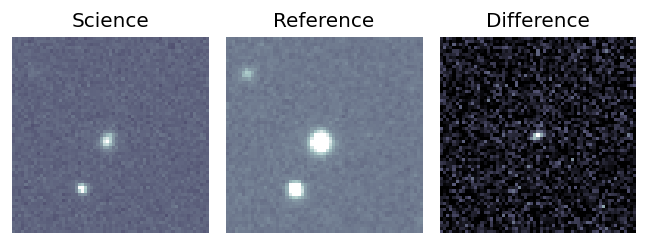
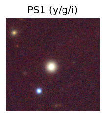
LegacySurvey: 1 sources in 3 arcsec Closest: d = 2.28 arcsec, 153.8 deg (east of north) photoz=0.05 (68% bounds 0.04, 0.05), type=SER peak abs mag = -17.29 (68% bounds -16.99, -17.58) 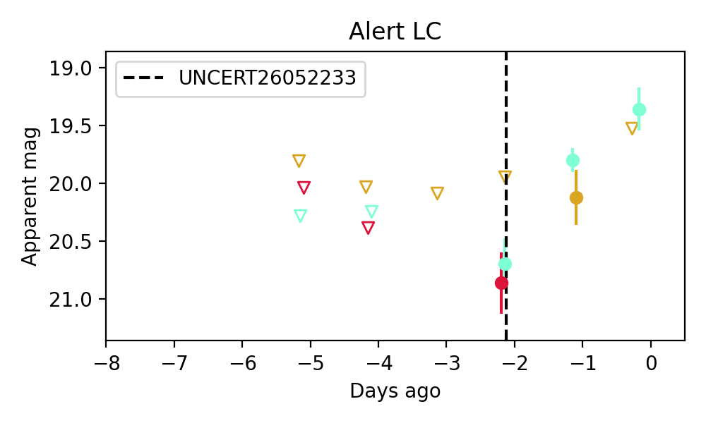
Consistent with synchrotron, g-r>0!
11. ZTF26aayizhs (Afterglow?) [Back to Top] [Share] [Trigger Swift] [Fritz ] [Lasair ]RA, Dec: 241.32864, -16.78584 16h 5m18.87s, -16d-47m-9.02sGalactic (l, b): 355.60716, 25.67424 WARNING: 3.97 deg from ecliptic plane ext(g-r) = 0.315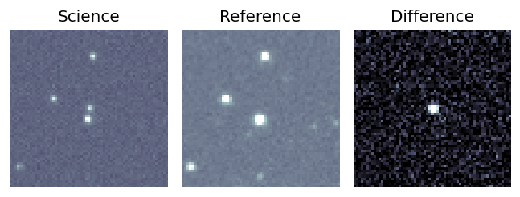
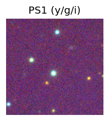
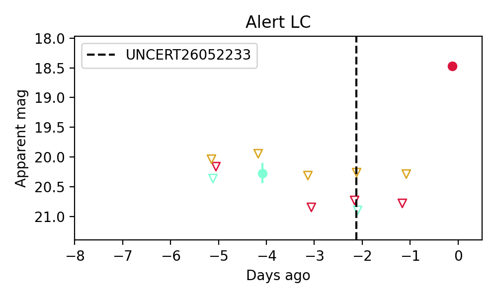
12. ZTF26aayjbxw (FBOT?) [Back to Top] [Share] [Trigger Swift] [Fritz ] [Lasair ]RA, Dec: 231.61843, -16.8561 15h26m28.42s, -16d-51m-21.97sGalactic (l, b): 347.96951, 32.13816 WARNING: 1.86 deg from ecliptic plane ext(g-r) = 0.133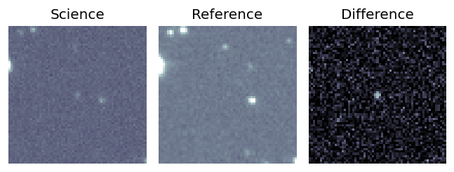
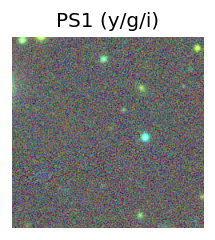
LegacySurvey: 1 sources in 3 arcsec Closest: d = 0.83 arcsec, 310.5 deg (east of north) photoz=0.58 (68% bounds 0.48, 0.8), type=PSF peak abs mag = -22.88 (68% bounds -22.41, -23.73) 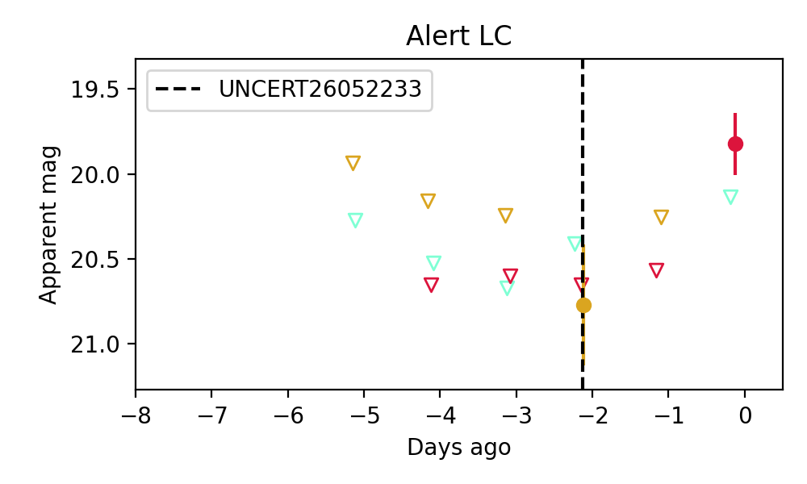
13. ZTF26aayjgre (Afterglow?) [Back to Top] [Share] [Trigger Swift] [Fritz ] [Lasair ]RA, Dec: 252.8224, -25.89736 16h51m17.38s, -25d-53m-50.49sGalactic (l, b): 355.59577, 11.63052 WARNING: -3.37 deg from ecliptic plane ext(g-r) = 0.278PS1: 1 source in 3 arcsec Closest: d = 3.88 arcsec photoz=0.10+/-0.02 peak abs mag = -19.29 Consistent with synchrotron, g-r>0!
14. ZTF26aayjmzz (Afterglow?) [Back to Top] [Share] [Trigger Swift] [Fritz ] [Lasair ]RA, Dec: 257.19343, -19.23025 17h 8m46.42s, -19d-13m-48.91sGalactic (l, b): 3.52825, 12.3441 WARNING: 3.67 deg from ecliptic plane ext(g-r) = 0.351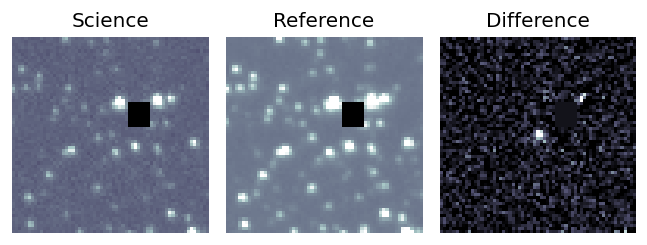
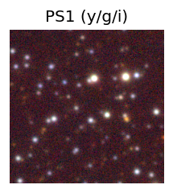
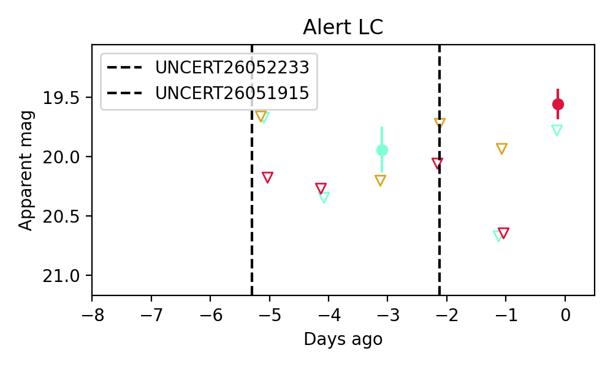
15. ZTF26aayjwwm (Afterglow?) [Back to Top] [Share] [Trigger Swift] [Fritz ] [Lasair ]RA, Dec: 241.38713, -15.58723 16h 5m32.91s, -15d-35m-14.04sGalactic (l, b): 356.63903, 26.43615 ext(g-r) = 0.253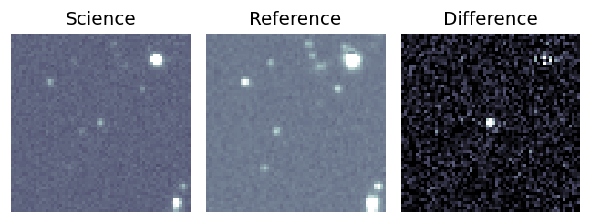
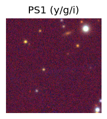
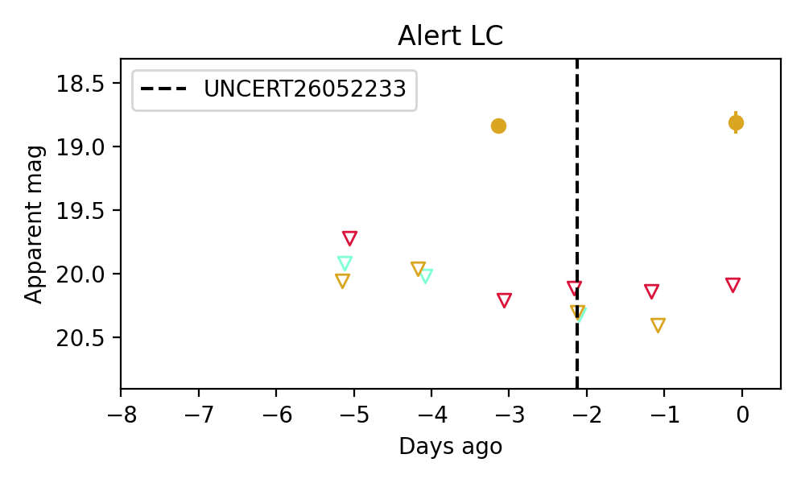
16. ZTF26aaykfej (Afterglow?) [Back to Top] [Share] [Trigger Swift] [Fritz ] [Lasair ]RA, Dec: 257.52309, 58.47764 17h10m5.54s, 58d28m39.52sGalactic (l, b): 87.19176, 36.00244 ext(g-r) = 0.033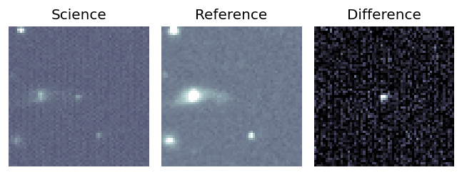
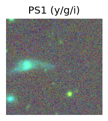
peak abs mag = -16.23 PS1: 1 source in 3 arcsec Closest: d = 4.78 arcsec photoz=0.23+/-0.17 peak abs mag = -20.46 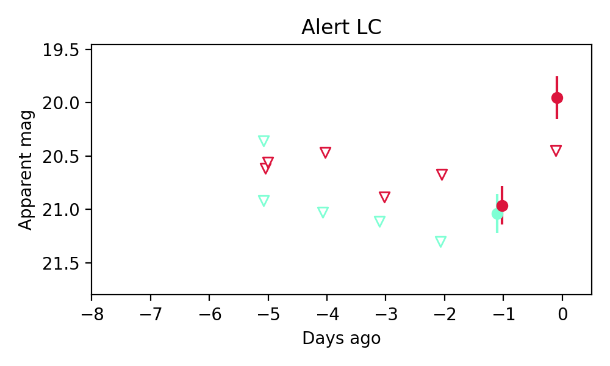
Consistent with synchrotron, g-r>0!
17. ZTF26aaykthj (Afterglow?) [Back to Top] [Share] [Trigger Swift] [Fritz ] [Lasair ]RA, Dec: 258.07359, -17.33066 17h12m17.66s, -17d-19m-50.36sGalactic (l, b): 5.61737, 12.72893 ext(g-r) = 0.307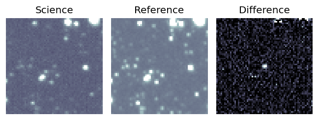
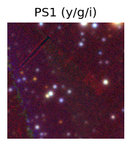
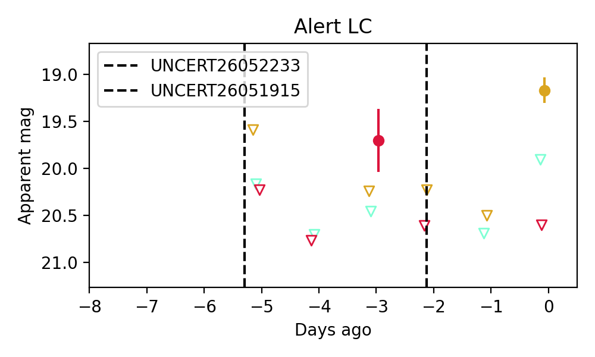